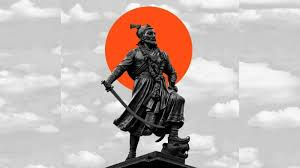

Chhatrapati of the Marathas
Reign 16 January 1681 – 11 March 1689
Coronation 20 July 1680, Panhala (symbolic)
or 16 January 1681, Raigad fort (official)
Predecessor Shivaji I
Successor Rajaram I
Peshwa Moropant
Trimbak
Pingale
Born 14 May 1657
Purandar Fort, Ahmadnagar Subah, Mughal Empire (present-day Pune district, Maharashtra, India)
Died 11 March 1689 (aged 31)
Tulapur, Ahmadnagar Subah, Mughal Empire (present-day Pune district, Maharashtra, IndCause of death Execution by decapitation
Spouse Yesubai
House Bhonsale
Father chh.Shivaji Maharaja
Mother Saibai
Religion Hinduism
click here